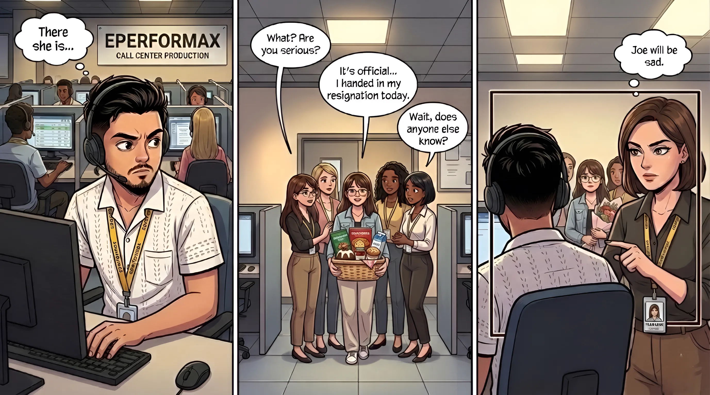
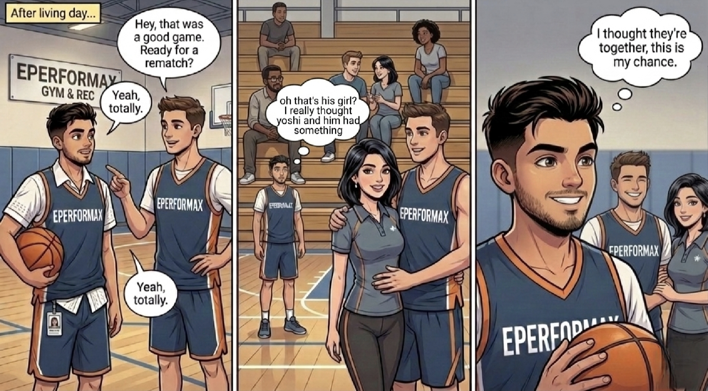
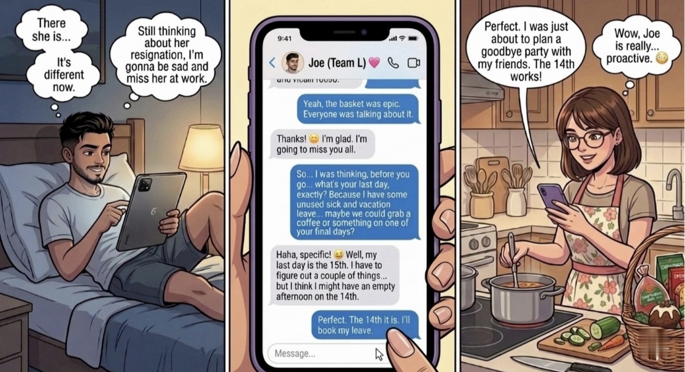

The day Joe noticed Yoshi in the production for not working for several days because of the resignation

Joe was invited by Yoshi's friend to play basketball, Joe thought that Yoshi and her friend has something special and he saw Yoshi's friend brings his girlfriend

After knowing that Yoshi and her friend has nothing special, Joe took the oppurtunity and made his first move by chatting with her